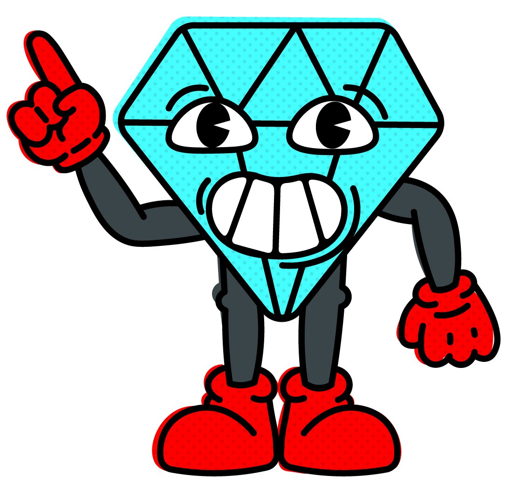
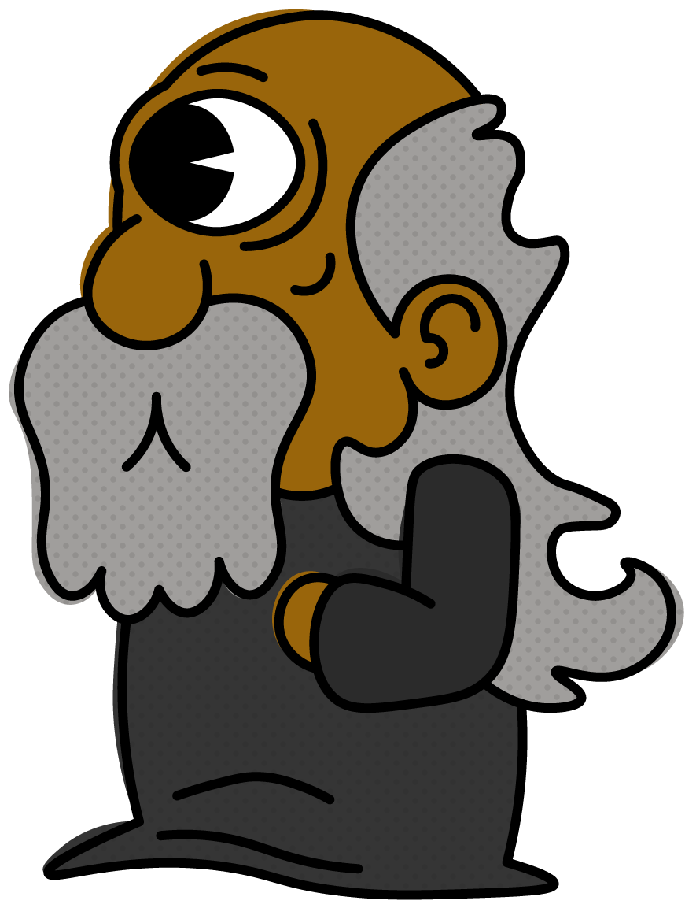
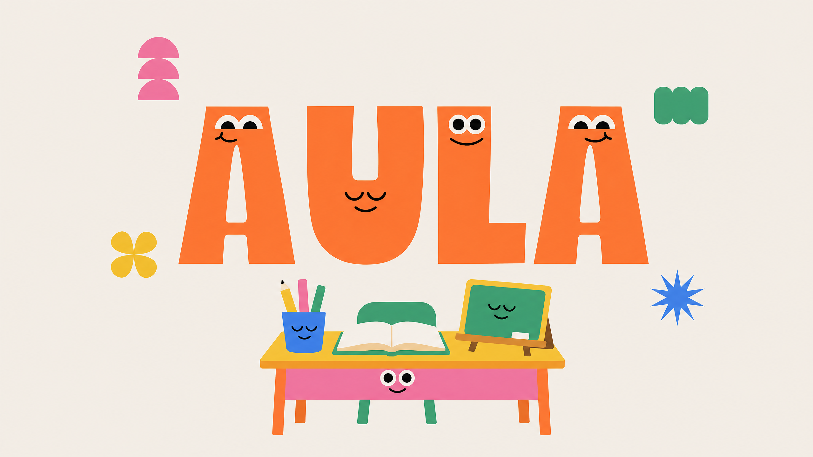
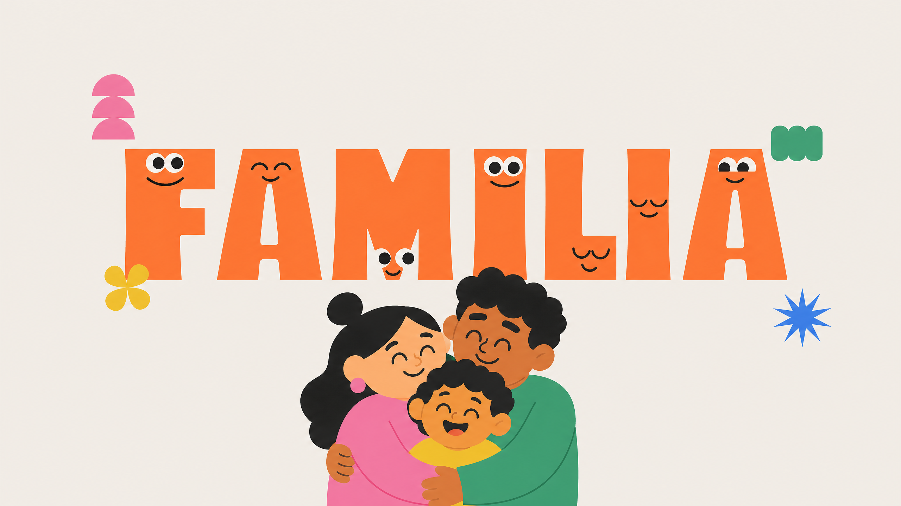
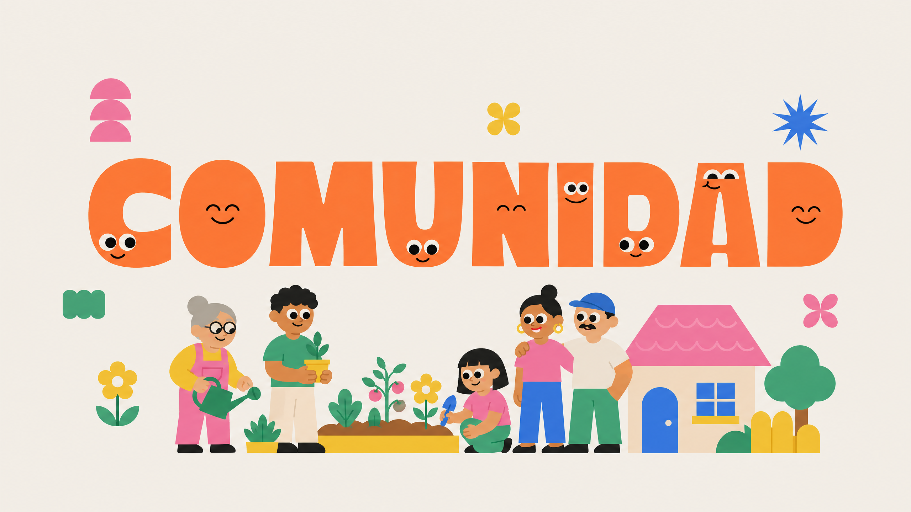

Volver también es avanzar
No siempre hace falta llamar la atención más fuerte. Puede ayudar una instrucción corta, un ejemplo y una señal tranquila para regresar a la tarea.

Antes de comenzar
Una bienvenida audiovisual para conocer el propósito de esta experiencia y comenzar el recorrido a tu ritmo.
¿Es tu primera vez por aquí?
¡Te acompañamos! Elige una historia, explora a tu ritmo y descubre cada rincón.El video se reproduce una sola vez. Si tu navegador bloquea el inicio automático con sonido, pulsa reproducir.
Una experiencia transmedia educativa
Cinco historias. Cinco formas de procesar el mundo. Un recorrido para comprender, acompañar y dejar atrás las etiquetas.
Diseñado para estudiantes, familias y docentes


Introducción · Lo esencial
A veces la atención no se pierde: cambia de dirección. Una tarea larga, muchas voces o una instrucción poco clara pueden hacer que el colegio se sienta más difícil de lo que parece desde afuera.
No siempre hace falta llamar la atención más fuerte. Puede ayudar una instrucción corta, un ejemplo y una señal tranquila para regresar a la tarea.
Una tarea grande pesa menos cuando se puede ver por partes. Listas, colores, recordatorios y tiempos cortos liberan espacio mental.
En el aula, la familia y la comunidad, acompañar es escuchar sin etiquetas y encontrar una forma de participar que respete el ritmo de cada quien.

01 / mira y escucha
Mira esta historia animada sobre TDAH y pon a prueba lo que observas en cada escena.
Las preguntas se activan al llegar a escenas importantes. Si fallas, tendrás que volver a ver el fragmento para intentarlo otra vez.
Reproduce el video para descubrir la primera tarjeta. Las preguntas siguientes permanecerán ocultas.
Pregunta bloqueada
Mira el video para desbloquearlaPregunta bloqueada
Mira el video para desbloquearlaPregunta bloqueada
Mira el video para desbloquearlaPregunta bloqueada
Mira el video para desbloquearlaPregunta bloqueada
Mira el video para desbloquearla01B / mira y escucha
Observa esta experiencia en primera persona. Las tarjetas aparecen mientras avanzas por el video, igual que en el recorrido anterior.
Video «Cómo es tener TDAH (medicado) | Fandub Latino» por Fallo!. La obra original corresponde a Ice Cream Sandwich.
Ver fuente en YouTubeLas preguntas se desbloquean mientras avanzas. Si fallas, podrás volver a mirar el fragmento y responder de nuevo.
Reproduce el segundo video para descubrir la primera tarjeta.
Pregunta bloqueada
Mira el video para desbloquearlaPregunta bloqueada
Mira el video para desbloquearlaPregunta bloqueada
Mira el video para desbloquearlaPregunta bloqueada
Mira el video para desbloquearlaPregunta bloqueada
Mira el video para desbloquearlaPregunta bloqueada
Mira el video para desbloquearlaPregunta bloqueada
Mira el video para desbloquearlaPregunta bloqueada
Mira el video para desbloquearla02 / cinco recorridos
Conoce a cinco personajes ficticios. Cada historia representa una acción cognitiva, no una etiqueta.
Guía de claridad mental
Ayuda a dividir las tareas, reconocer lo que se siente y recuperar el enfoque con pasos pequeños.
Guía de paciencia y estabilidad
Acompaña desde la experiencia: promueve la calma, la comunicación abierta y la flexibilidad.
Dispersión y agotamiento mental
Representa una mente saturada que salta entre estímulos y necesita comprensión, pausas y apoyos claros.
Empatía y resiliencia adolescente
Vive los retos escolares en primera persona y convierte la creatividad, la persistencia y la empatía en recursos.
Energía y entusiasmo adolescente
Explora con energía e ingenio, mientras aprende a manejar la distractibilidad, la impaciencia y el estrés.
03 / voces profesionales
Profesionales de la psicología y la educación aportan conocimiento y perspectiva a esta plataforma.
Conoce a las profesionales que aportan experiencia desde la psicología y la educación. Sus perfiles ofrecen contexto y recursos para seguir explorando; no sustituyen una valoración individual.
¿Buscas ampliar esta mirada profesional?
Escuchar a especialistasPERFIL 01 · PSICOLOGÍA CLÍNICA
Psicóloga clínica
PERFIL 02 · DISEÑO Y EDUCACIÓN
Diseñadora gráfica y docente universitaria
Herramientas de acompañamiento
Orientaciones educativas basadas en el documento del proyecto. No sustituyen una valoración ni una atención profesional.
Busca orientación en fuentes verificables como la Clínica ANI, la World Federation of ADHD y contenidos de RTVE. Confirma siempre el alcance de cada servicio.
No encontramos perfiles que coincidan.
04 / conversaciones
Conversaciones que acercan distintas experiencias y miradas profesionales.
ENTREVISTA 01 · EXPERIENCIAS
Entrevista de grupo focal que reúne distintas voces para conversar sobre cómo se vive el TDAH, qué apoyos hacen la diferencia y por qué escuchar las experiencias personales ayuda a comprender sin generalizar.
ENTREVISTA 02 · PSICOLOGÍA CLÍNICA
Conversación con Angie Benavidez sobre TDAH, atención y las formas de mirar lo que ocurre más allá de la idea de “falta de atención”.
ENTREVISTA 03 · EXPERIENCIA DOCENTE
Conversación con Hellen Zamudio sobre la experiencia de acompañar el TDAH en el aula, los retos cotidianos y los apoyos que pueden favorecer una participación más comprensiva.
05 / ideas para compartir

Instrucciones claras, tareas por partes y pausas pueden convertir una exigencia confusa en un apoyo concreto.
Leer nota
Comprender el contexto y reconocer la diversidad cognitiva ayuda a acompañar sin etiquetas.
Leer nota
La inclusión se construye entre compañeros, docentes y familias: comprender, adaptar y ofrecer apoyo también es aprender en comunidad.
Leer nota06 / galería visual
Desplázate por las imágenes del proyecto usando las flechas o los indicadores inferiores.
07 / herramientas para practicar
Actividades breves para practicar memoria de trabajo, expresión visual y atención flexible. Son recursos educativos, no herramientas de diagnóstico.
Observa la secuencia de luces y repítela haciendo clic en los cuadros.
Usa el mouse para dibujar una forma, una emoción o una idea que quieras compartir.
El lienzo está listo.
Encuentra los símbolos de la secuencia sin distraerte con los demás. Cada ronda aumenta el reto.
08 / conócete mejor
Responde pensando en los últimos seis meses. Esta actividad es orientativa y no diagnostica TDAH: solo un profesional puede realizar una evaluación.
09 / sigamos en contacto
Nuestra comunidad · datos de visitas
“Gracias por ser parte de esta conversación: cada persona que nos visita ayuda a que más familias aprendan y comprendan.”